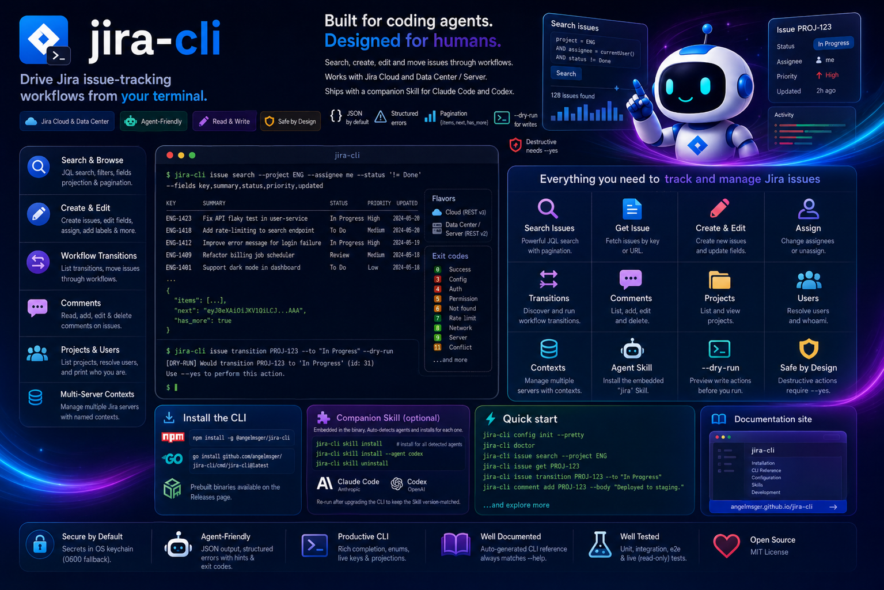

Read and write Jira from your terminal — built for coding agents, designed for humans.

Read, search and update Jira issues — with output a coding agent can act on.
Query with raw JQL, or build one from filter flags: project, assignee, status, type, label and free text — with me and unassigned conveniences.
Create, edit and assign issues in plain text — the ADF asymmetry between Cloud and Data Center is bridged for you — and preview any write with --dry-run.
Discover what an issue can do right now, then move it — by transition name or ID, with candidate lists on ambiguity.
Read issue comments and post, edit or delete them — deletion gated behind --yes.
kubectl-style named contexts in one config file. Switch the current server, or override per command with --use-context.
JSON by default, with structured errors — categories, exit codes and recovery hints a coding agent can branch on.
Tokens live in the OS keychain, with a per-user DPAPI fallback on Windows and a 0600 fallback on macOS/Linux — never in the config file.
One flavor-agnostic client; the backend — Cloud or Data Center / Server — is detected automatically.
Install with npm, then finish setup in two steps — deploy the Skill, then turn on shell completion.
# recommended — fetches the prebuilt binary for your platform
npm install -g @angelmsger/jira-cli
Other methods — go install, a source build, or a prebuilt binary from the
Releases page — are in the
installation guide.
Then finish setup:
A jira Skill is embedded in the binary. It detects your coding agent — Claude Code, Codex — and installs for each:
$ jira-cli skill installCompletes subcommands, flag values and live project keys. Load it once:
$ source <(jira-cli completion bash)Set up a server, then read and write from the terminal.
# interactive TUI setup, then verify connectivity $ jira-cli config init --pretty $ jira-cli doctor # find an issue, then read it $ jira-cli issue search --project ENG --assignee me $ jira-cli issue get PROJ-123 # move it through the workflow, preview before sending $ jira-cli issue transitions PROJ-123 $ jira-cli issue transition PROJ-123 --to "In Progress" --dry-run
Eight command groups. Every flag and example lives in the full CLI reference.
Get, search (JQL), create, edit, assign and transition issues.
projectList and inspect Jira projects.
commentRead, post, edit and delete issue comments.
userResolve user selectors to the identifiers assignee flags accept.
configSetup wizard, plus multi-server context management.
authInspect and manage stored credentials.
doctorDiagnose configuration, credentials and connectivity.
Longer-form documentation, rendered on GitHub.
Every install method, shell completion, and deploying the Skill.
Architecture, the flavor-agnostic API client, error model and the ADF bridge.
How releases are cut and published to GitHub and npm.
The jira Skill that teaches a coding agent the CLI.